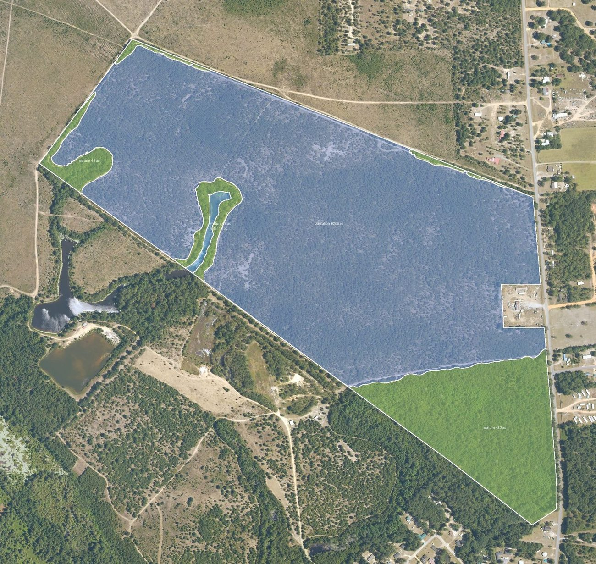
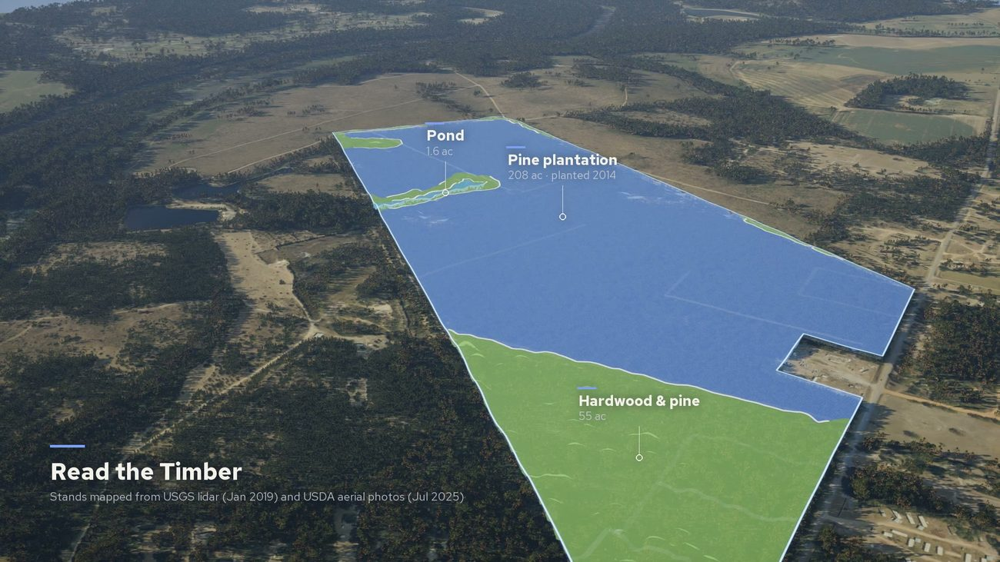
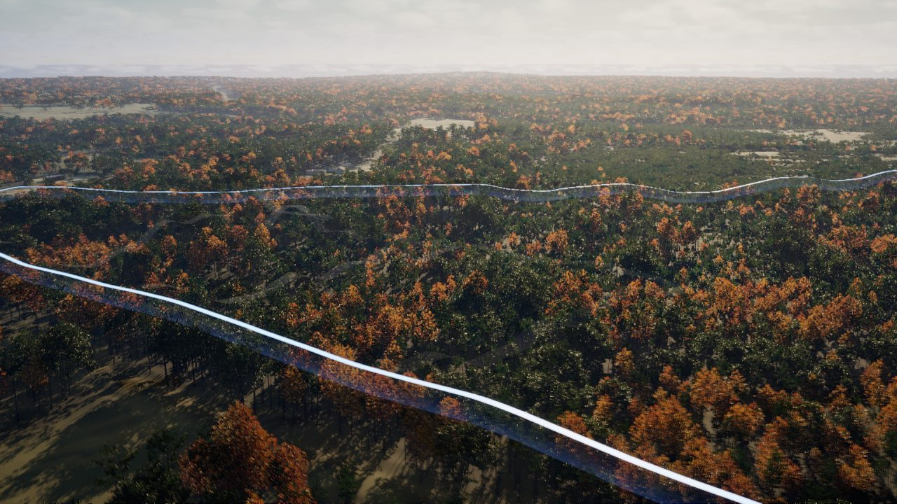
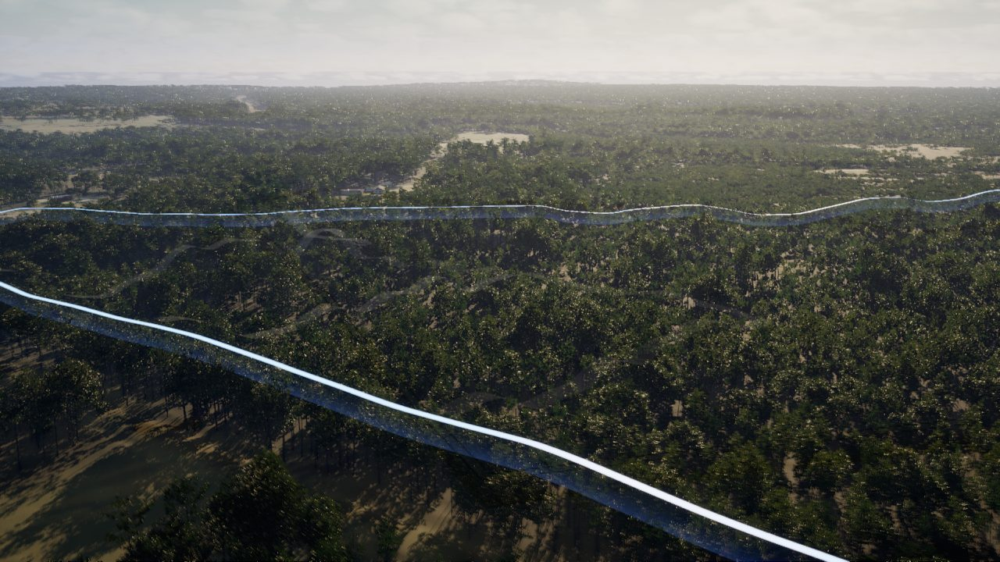
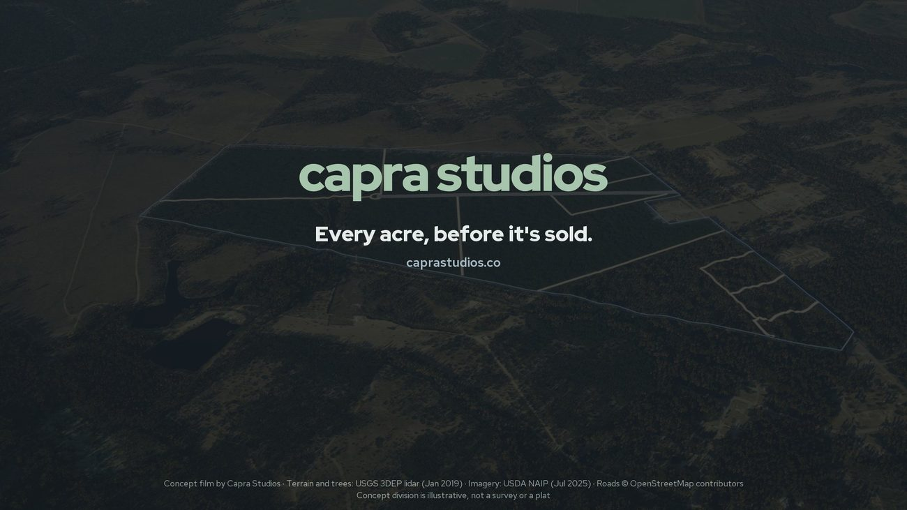

Parcel to film, stage by stage
Each stage with its inputs, process, outputs and the engines that run it; numbers are from real runs. Colour marks the family of a stage; choose a project type to light the steps that apply.
Intake
A parcel ID or address, the film's purpose and the brand kit become one lot record.
In
- Parcel ID, address or map pin
- Mode: tract, project, lot or fund
- Brand kit: wording, logo, contact
Process
- Parcel geometry from the county GIS sets the hero area and a far ring of a few km
- Mode picks the planner, the cards and the deliverables
- Projection: the state plane or UTM zone for the parcel, metres
Out
In every film
Acquisition
Public datasets fetched and cut to the property and its surroundings.
In
- USGS 3DEP lidar (Entwine point tiles), ~4 pts/m²
- USDA NAIP aerial photo, 0.6 m RGB
- County parcel lines
- OpenStreetMap roads
- USDA Cropland Data Layer, 30 m
- Microsoft building footprints
- USFS FIA basal area by species and county
Process
- Lidar clipped to the hero area; classified ground and first returns kept
- NAIP at 0.6 m near the camera, coarser for the far ring
- FIA: the county and its Census neighbours pooled into one species mix
Out
In every film

Canopy height from the lidar: each bump is one crown, shaded by height.
Land model
Terrain, every tree, water and buildings measured from the survey.
In
- Lidar points
- NAIP photo
- Parcel lines, roads, footprints
Process
- Bare-earth DEM at 1 m for the hero, 4-8 m wide grids to the horizon
- Canopy height model (1 m) and local maxima: one tree top per crown with its height
- Stands from the photo's texture plus canopy height: plantation, mature timber, cuts, water
- Roof planes from first returns, squared to the footprint, roof type fitted (gable, hip, shed, flat), colour from the photo
Out
In every film

Stands read from the photo and the lidar: plantation, mature timber, water and edges.
Plan and draft
A planner per mode, a camera path over the real canopy, a draft for review.
In
- Land model
- Brief
Process
- Tractstands, acreage, frontage, access, water
- Projectclient layout or an illustrative one, grading (dc_grade), scale
- Lothome site, facing, a labelled concept home, measured view study (viewshed)
- Fundseveral properties on one map, a chapter each
- Camera: a spline held above the canopy surface, eased, one selling point per shot
Out
In every film
Scene build
One unattended Unreal Engine 5.8 session builds the property.
In
- Land model
- Plan
Process
- new_lot: an APFS clone of the template project (no copy cost)
- Terrain tiles and the photo material, water, roads, the lot line
- Forest: instanced static meshes, one component per mesh and tint, a few hundred components for ~500k trees
- Concept buildings and layouts, labelled as concepts
Out
In every film

The built scene from the film camera.
Realism layer
Our own species by the county's mix, ground and water from the photo, the chosen day of the year.
In
- canopy.bin
- mix.json
- NAIP
- CDL
- the tree libraries
Process
- Pines: species by the county's pine shares in ~250 m stands; form by lidar height; a pine taller than its species grows goes to one that reaches it
- Hardwoods: 82 species by FIA share, placed in patches
- Tint: each tree coloured from the photo (k-means, 40 tints per kind)
- Season: one day-of-year drives every leaf material; fields recoloured by crop calendar
- Water and roads coloured from the photo; wind on every tree
Out
In the newest films; joining the pipeline


JulyNovemberOne frame, July and November: the season engine.
Render
Movie Render Queue out of process, one render at a time on the Mac mini.
In
- The lot's project and sequence
Process
- Check stills: every 48th frame at 2 samples
- Draft: 1080p, 8 samples
- Final: 4K, only after sign-off
- scan_frames: the final checked frame by frame against the approved draft
Out
In every film
Post and delivery
Cards, pins, sound and every cut, then the trees-of-the-film sheet.
In
- Frames
- Brand kit
- lot.json
Process
- Title, selling-point cards and chips at phone-legible sizes; a lint pass on every card
- The property line labelled approximate; pins for what's nearby
- Sound mixed from field recordings to -14 LUFS
- Cuts: 16:9 up to 4K, 4:5, 9:16; stills
- trees_sheet: every species in the film in four seasons, with its share
Out
In every film

End card.
Built once, used on every property
Tree factory
Species grown from code, imported as Nanite assemblies, photographed in lineups.
- Broadleaf: space colonisation inside a species crown envelope, pipe-model limb radii from DBH, leafy sprays and leaf outlines per species
- Conifers: whorled limbs, needle tufts or needles along the twig, by species numbers
- Import: one trunk mesh plus sprays placed by a Nanite assembly; season material with per-leaf timing
- 84 species in the target set; three import lanes and a render lane
82 live · 2 in the pipe
Photos to textures
Field photos of real trunks become seamless bark tiles.
- Apple Object Capture: ~20 photos to a 3D bark patch
- Orthographic bake: colour and height, trunk curvature removed
- Seamless tile: colour, normal, height, roughness, AO
Waiting on field photos
Store packs
Our own trees and materials, packaged for the asset stores.
- Unreal, FBX, GLB, USD; summer, fall and winter variants
- Own materials only; licensed scans never ship
Planned
What is measured, what is labelled
From county parcel lines; labelled approximate.
Measured from the terrain and canopy (viewshed).
Unbuilt homes and layouts labelled as concepts.
A typical mix from the FIA tables; labelled typical, never a survey.